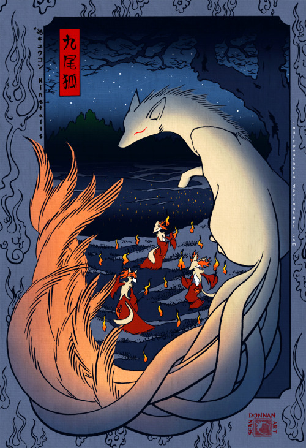
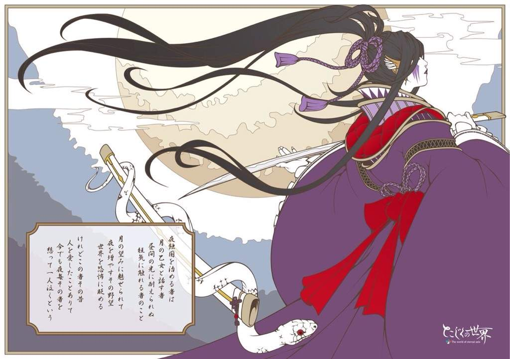
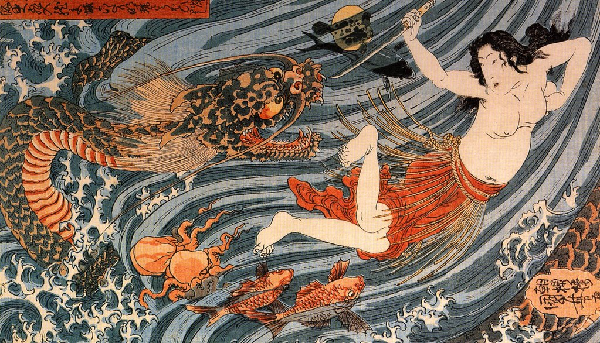

1 / 3

Foxes (狐 or kitsune) are associated with the God Inari (稲荷)
who is worshiped for fertility, rice, tea, sake, agriculture,
industry and general prosperity and success.
Foxes are the messenger
of Inari and are usually pure white.
2 / 3

Tsukuyomi-no-Mikoto (月読尊) or Tsukuyomi (月読), is the moon god in Shinto and Japanese mythology.
The name "Tsukuyomi" is a compound of the Old Japanese words tsuku :
(月, "moon, month", becoming modern Japanese tsuki) and yomi (読み, "reading, counting")
3 / 3

Ryūjin or Ryōjin (龍神, "dragon god"), which in some traditions is equivalent to Ōwatatsumi, was the tutelary deity of the sea in Japanese mythology.
This Japanese dragon symbolized the power of the ocean, had a large mouth, and was able to transform into a human shape.
He is considered a good god and patron of Japan, since the Japanese population for several centuries lives off the sea and seafood.
❮
❯